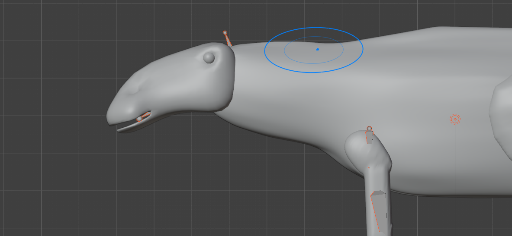
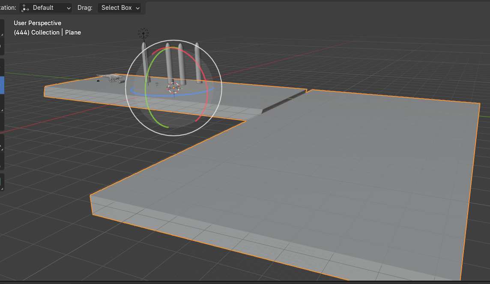
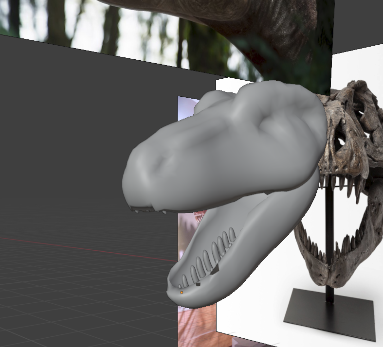
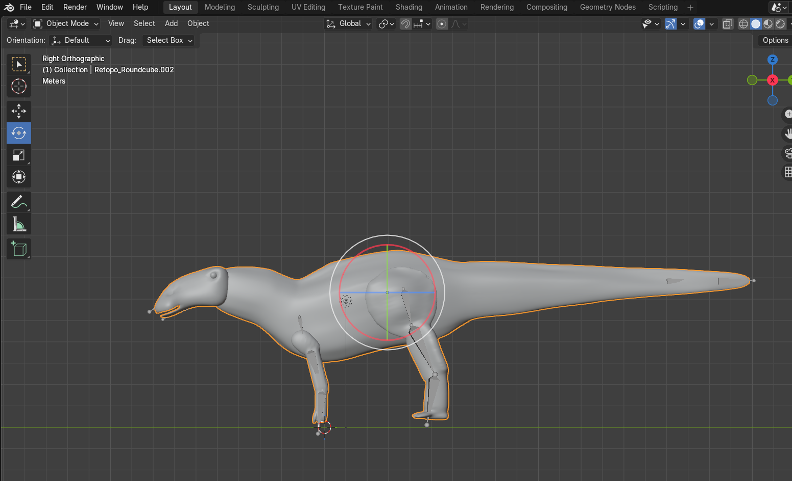
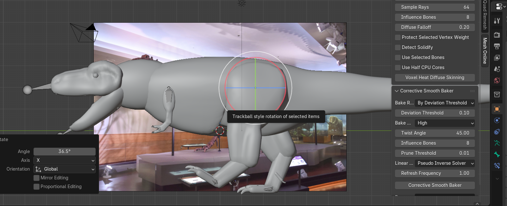

DAVID NGUYEN
( HE/HIM )
Instagram: @toastaolophosaurus
About the Artist
David Nguyen is a digital media artist currently completing his Digital Media Art degree at San Jose state University. He practices mixing up the natural world with technology using 3d modeling technology and video editing technology. Using all of that he creates animated documentaries and animations.
Ancient Stroll
A short insight into life in North America during the late Cretaceous period. A combination of nature and technology. Follow a T-rex as it lives its daily life and does something everyone normally does: go on a walk.




